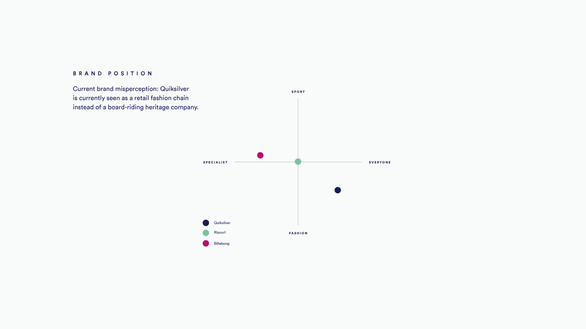
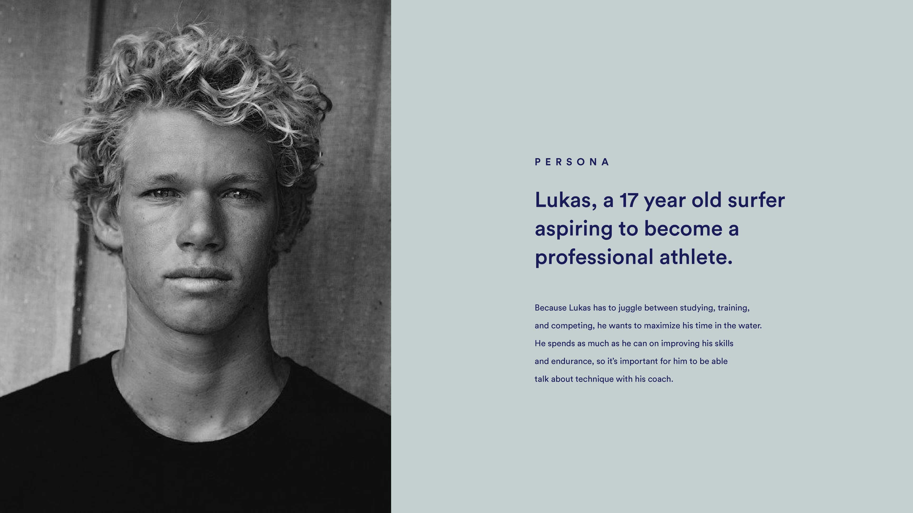
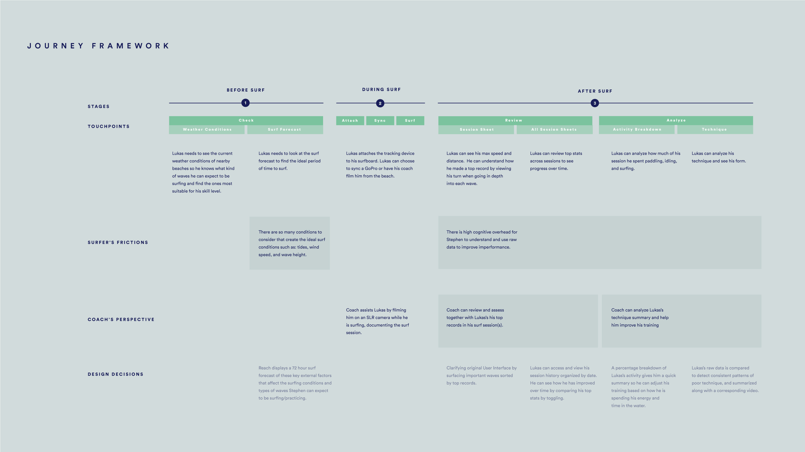

A performance tracking application designed for aspiring professional surfers. Reach visualizes performance insights to make it easier for surfers to improve their technique.
Team: Annette Cheung, Summer-Lee Schoenfeld, Scott Lee, Elizabeth Chan
design process
identifying the business problem
Looking for potential mock clients to work with, we encounter several possible clients with business problems: Barnes and Noble, Sony, and Quiksilver. We decided on choosing Quiksilver because we found that there was sufficient potential in terms of feasibility, viability, and desirability to propose a solution for their business problem. After conducting in-depth research on Quiksilver’s brand and values, the scope of the project was defined.

our intervention
As a team, we diverged our ideas by asking ourselves how we might tackle the business problem using various idea generating methods such as the Five Whys and How Might We questions. We went through several iterations and changes before we got to our main question to frame the product: how can Quiksilver use technology to support athletes in achieving their goals by measuring their progress?
persona
I developed the persona based on research done online about young surfers and their journey on developing as a professional surfer. Due to the short timeframe of the project, we couldn’t conduct in-person interviews with real young surfers. Having in-person interviews would have provided improved insights for our project.

customer journey framework
The journey framework was developed and iterated based on an existing surf performance data tracking application we chose to work and improve on named Trace. We redefined the use of the application by integrating a “before surf” experience and by refining the “after surf” experience.

interface + interactions
I was responsible for prototyping the application using Flinto and Sketch. Working closely with the visual designer in my team, I translated the Illustrator screens into Sketch files in order to create the interactions in Flinto.
checking external conditions
Before surfing, surfers will be able to check the external conditions of nearby areas and evaluate which area would be appropriate for their current skill level. This would ensure that the surfer is continuously improving at a rapid pace.
session stats
After the surf, surfers can review their session stats and highlights of the surf session. The highlights are filtered based on speed, distance, and airtime- aspects used by professional surf judges to evaluate surf competitions. Surfers can also compare multiple surf sessions on one page to see how they are improving over time.
performance analysis
The performance review section allows surfers to see how much time they spent paddling, idling, and surfing. They can review their activity with their coach to make sure that enough time is allocated in each area. The performance review section also allows surfers to understand specific insights and surfing mistake patterns based on the data collected by the tracking device.
reflection
Overall, I was satisfied as to how far we went with our project. As this was one of the first user experience courses I’ve taken, it was an intense experience to be thrown in the deep end of integrating design thinking with real business problems. This project also made me realise the importance of communicating an idea and executing it at a high level.